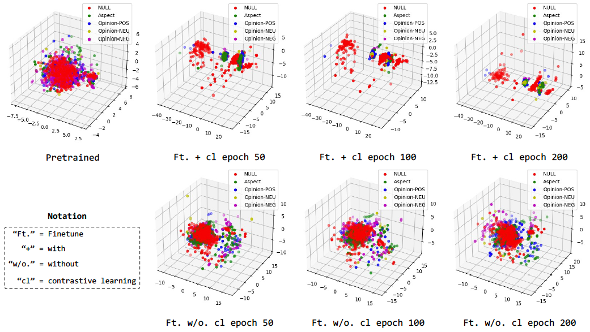
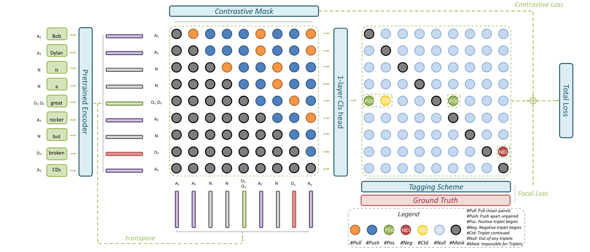

繁：孫橋
简：孙桥
Nickname: Jospher
E-mail: qiaosun22@m.fudan.edu.cn
Publications
Github
CV
Keywords: Representation Learning, Physics-informed Large Language Models, Natural Language Processing, Multimodality Perception, Memristor-based Analog Computing.
Current Progress
Update as of June 17, 2024:
-
New paper revision, “MiniConGTS: A Near Ultimate Minimalist Contrastive Grid Tagging Scheme for Aspect Sentiment Triplet Extraction”. In the last review, it won 3/3/3.5 overall assessment and 4 meta overall assessment (out of 5). In this new release, I give active feedback to all the suggestions and comments. I have supplemented more detailed LLM-based experiments and conducted an in-depth analysis of error cases, revealing interesting facts and insights for ABSA (Aspect-Based Sentiment Analysis) in the context of the current era of LLMs!
Additionally, I have re-illustrated all the figures and reorganized the structure of the narratives.
Key contributions of the study include a Minimalist Grid Tagging Scheme using the fewest classes of labels, integration of a novel Token-level Contrastive Learning Strategy to enhance the Pretrained Language Model (PLM) representation, which largely facilitate the internal potential of PLMs and achieve SOTA with entirely NO reliance on complicated classification head design or external semantic enhancement. Additionally, strategic evaluations on GPT models—where the Chain-of-Thought method is evaluated for the first time in this release—demonstrate the effectiveness of the approach. Both 1) notable proofs and theoretical analyses and 2) case study are provided to support the efficacy of the new tagging scheme and the contrastive learning enhancements.
 -
Ongoing project, “Healthcare Large Language Model”, tackles the challenges in rotated object detection (ROD), especially in few-shot and out-of-distribution (OoD) scenarios. This paper introduces the VL-Rotate model, which incorporates vision-language integration to improve detection performance significantly.
Current Progress:- Gathered open-sourced literature corpus from website.
- Data wrangling, cleansing, and validating.
- Made a QA Dataset.
- Finetuned Llama-3 Chinese and ChatGLM on this dataset.
- Gathered more data from wider resources and form a open-source professional Healthcare Dataset.
- Develop systematical metrics & benchmark dataset for evaluation.
- Enable multimodality embedding & understanding.
- Enable multimodality planning.
- Simulating and combining with the real robotic system.
-
New paper, “VL-Rotate: Vision-Language Learning for Few-Shot OoD Rotated Object Detection”, tackles the challenges in rotated object detection (ROD), especially in few-shot and out-of-distribution (OoD) scenarios. This paper introduces the VL-Rotate model, which incorporates vision-language integration to improve detection performance significantly.
Key contributions of the study include:- A novel Oriented Object Text Alignment Module (OOTA) and Fine-Grained Region-Text Contrastive Module (FRTC), enhancing text-image alignment and model fine-tuning.
- Extensive evaluations on multiple challenging datasets, where VL-Rotate achieves state-of-the-art results, demonstrating up to 75.2% mAP on HRSCOoD dataset.
- Detailed theoretical analysis and empirical evidence proving the effectiveness of integrating vision-language approaches in improving ROD, particularly in complex scenarios.
-
New paper, “Rethinking ASTE: A Minimalist Tagging Scheme Alongside Contrastive Learning”, revises the conventional ASTE methods by proposing a minimalist tagging scheme. The key advancements include simplifying the classification challenges associated with Aspect Sentiment Triplet Extraction (ASTE) and enhancing the performance using contrastive learning, which significantly outperforms large language models like GPT-3.5 and GPT-4 in targeted scenarios.
Key contributions of the study include a simplified tagging scheme that reduces the number of label categories needed, integration of a token-level contrastive learning approach to improve the Pretrained Language Model (PLM) representation, and strategic evaluations on GPT models highlighting the effectiveness of the approach in context learning scenarios. Notable proofs and theoretical analyses are provided to support the efficacy of the new tagging scheme and the contrastive learning enhancements.

Research Papers and Manuscripts
-
Multimodality Learning Research:
Weihan Yin, Qiao Sun, et al. (5th/9 author). VL-Rotate: Vision-Language Learning for Few-Shot OoD Rotated Object Detection. Submitted to NeurIPS, 2024. Link:
Manuscript
-
Natural Language Extraction Research:
Qiao Sun, et al. Rethinking ASTE: A Minimalist Tagging Scheme Alongside Contrastive Learning. To be submitted to EMNLP, 2024. Link:
Preprint
-
Computer Vision and Human Vision System Research:
Qi Fan, Qiao Sun, et al. DV2DM: A Learning-based Visible Difference Predictor for Videos. Submitted to TPAMI, 2024. Link:
Manuscript
-
Memristor-based Neuromorphic Analog Computing Research:
Nanyang Ye, Qiao Sun, et al. (Co-first author). Synergistic Development of Perovskite Memristors and Algorithms for Robust Analog Computing. Under Review in Nature Communications, 2024. Link:
Manuscript
Literature Investigation
- Event Extraction. Manuscript
- 3D Reconstruction. Manuscript
- SNN. Manuscript
Dataset Development
- ViLocVis: A Dataset for Video Visible Difference Prediction. We collected responses of the human visual system (HVS) to distorted videos under various luminance and viewing distance. We gathered a dataset named ViLocVis, which com- prises of several reference-distorted video pairs and corre- sponding marking videos. The dataset is divided into two parts: manually annotated data and synthetic data. Link: Paper | Code
Textbook Translation
- Niklas Lidströmer, Hutan Ashrafian - Artificial Intelligence in Medicine (2022, Springer) Link. Translated P898 (start from "Challenges in the Path") - P903; P905 - P916; P919 - P933; P939 - P947; P951 - P957 (end at "BE Cancer Detection Using Narrow-Band Imaging"). Link: Manuscript
Lectures
- The Emerging LLM-based Frameworks for Vision-centric Tasks. Delivered at The Vision Sensor Research Group of Shanghai AI Lab, Feb, 9, 2024. Manuscript
- The Transformer Architecture. Delivered at HealthCare Intelligence Research Group of Fudan University, Apr, 4, 2023. Link: Manuscript